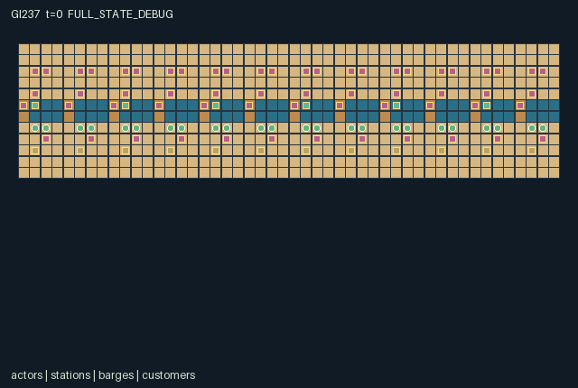

GI237 / SPATIAL
Canal Nightmarket Kitchens
Release verification episode
Untrained uniform legal actions. Actual JAX state sampled along the full original episode; full-state debug camera. No human performance or learning claim.

Run this game
crucibles play --game 237
Start Python locally, then open the address printed by the terminal. Installation, multiplayer, takeover and keyboard controls →
Objective, rewards & ending
Exact task contract
{
"objective": "Coordinate shared ingredient unloading, recipes, water allocation and warm matching deliveries to moving customer docks.",
"natural_termination": "No early natural terminal; the 768-tick market closing truncates the episode.",
"interaction": "Basket help, shared barge stocks, equipment washing, delayed downstream water, recipe ratios, moving requests and temperature-sensitive handoffs affect others.",
"observation_access": "Public quay/canal geometry; selected nearest local entity rows reveal customer requests only nearby or through explicit timed relay. Hydraulic and plate-heat gauges are available only within the current four-cell sector. Unseen event channels are debug-only."
}Declared per-step reward bounds: -4.0 to 4.0. Observability: partially_observable.
Rules
- Select one of 48 workers. Knife, pot, navigator and wash tools can be exchanged; carried items and warmth transfer through native handoffs.
- Unload one ingredient from a finite-stock barge only while an adjacent worker assists. Knife/navigator tools take root; others take grain.
- Cut roots at boards. Two cut roots and one grain make broth; one cut root and two grain make a rice plate. A clean stove cooks for four ticks.
- Wash uses local water and restores a clean stove use. Open locks send water downstream through two FIFO slots; fresh water enters only at the west.
- Footbridges require water at most three; barges require water at least two and open locks. Barges and customer docks travel along the canal.
- Serve the requested dish while warm. Requests are local; relay them before committing ingredients. Nightmarket closes at 768.
Original mechanism document (historical status wording retained)
# Canal Nightmarket Kitchens Status: AUTHORED_NOT_EXECUTED. Source SHA256: 313eebca823ab1d005942f0a52a625798ed17296f0302fa0b0091198ecbc8f00. All scripts/interventions are UNEXECUTED_AUTHOR_HYPOTHESIS. Native contract: A=48, O=212, U=16, H=768; scalar int32 actions, float32 observations, fixed int32/bool state. Geometry 48 by 12, x right/y down. Family cooperative_kitchen. Twelve kitchens occupy one 48 by 12 quay. Water flows east. Barges and customer docks circulate horizontally; barges refill only at their west-boundary wrap. This is an explicit finite conveyor abstraction. Workers never wrap and cannot cross canal cells except eligible lock bridges. Boats and customers are world processes, not extra agent rows. Two recipes consume different proportions of two ingredients. A batch consumes one clean use; washing replenishes cleaning but removes water needed by downstream navigation. Closing a lock conserves local water while blocking barges and potentially raising water above bridge access. Starting pot identity is a role, not an exclusive stove permission: any prepared-item carrier may load, while knife, wash and lock operations have tool requirements. Six barges each hold eight roots and eight grain; people carry one ingredient or plate. Unloading requires simultaneous assistance at original positions; serial handoffs use updated positions. Stove timers, heat and inventory are state. Zero-heat carried food spoils after the action phase; the ordering permits a final cold matching service at lower quality. Sector telemetry exposes hydraulic timing without remote customer requests. Work costs 0.002. Matching service pays each home-crew actor 0.04+0.08*heat/24 and the server a further 0.08+0.12*heat/24. Spoiled carried plates cost 0.04. No reward is paid merely for washing, relay or loading. Native rewards are clipped to [-4,4]. Central cooks/runners, mobile tool exchange and different water/traffic policies are author hypotheses; success, learnability and throughput are unmeasured. ## Interface and visibility Public quay/canal geometry; selected nearest local entity rows reveal customer requests only nearby or through explicit timed relay. Hydraulic and plate-heat gauges are available only within the current four-cell sector. Unseen event channels are debug-only. Source entry lines: reset 26, legal_actions 66, observe 87, raw_step 121. Exact columns, normalizers, shapes and scene bindings are in manifest.json. Every selected entity slot ends with presence; hidden slots are zero. Crew identities remain fixed, while tools may change. A legal intent can still be blocked by earlier actors, missing simultaneous help, material shortages or geometry. Masked or out-of-range actions become Wait. Actor priority rotates as (loop index + t) mod A. No early natural terminal; the 768-tick market closing truncates the episode. Already-done raw calls preserve every state leaf and observation, return zero rewards and true per-agent dones, and preserve terminal causes. Nonterminal calls advance t exactly once. No autoreset or external state exists. Signed identities and sentinels use int32; reset keys are not copied into state. Observation bounds [0,1] and explicit reward clipping [-4,4] are source declarations, not numerical verification. ## Literal source evidence - candidate.py:158: assist = jnp.any((jnp.sum(jnp.abs(original_pos - p), axis=1) <= 1) & (actions == 5) & (jnp.arange(48, dtype=jnp.int32) != i)) - candidate.py:159: lift = (a == 6) & (bd[b] <= 2) & available[b] & assist & (w['item'][i] == 0) - candidate.py:167: load = (a == 8) & jnp.any(stove) & room & ((w['item'][i] == 2) | (w['item'][i] == 3)) & (w['timer'][c] == 0) & (w['meal'][c] == 0) - candidate.py:72: wash = jnp.any(near & (s['station_kind'][None, :] == 3), axis=1) - candidate.py:183: serve = (a == 11) & jnp.any(match) & (w['item'][i] >= 4) - candidate.py:204: listeners = (ad <= 3) & signal - candidate.py:217: ready = (s['veg'] + s['grain'] == 3) & (s['veg'] >= 1) & (s['grain'] >= 1) & (s['clean'] > 0) & (s['meal'] == 0) - candidate.py:231: flow = jnp.where(s['gate'] & (water >= 2), 1, 0).astype(jnp.int32) - candidate.py:236: advance = (t % 3 == 0) & (s['water'][sector] >= 2) & s['gate'][sector] - candidate.py:245: expired = s['deadline'] <= 0 ## Human operation, provenance and limits Scene data binds actual positions, stock, tools and events. Human single-role/multiple-role control must call the unchanged native joint action interface. No UI has been implemented, opened or played by this author. Role rendering must restrict event presentation to visible entities; global event inspection is debug-only. Four independent world families are authored, without upstream code or assets. Supplied external reference files were permitted but not read. No prior game, results, IR, selection, training, heldout, memory, network, API, local model or numerical package was read/invoked. Current population/family240 and dispatch scope override inherited counts. Parentless initial window: 240 used/reserved of 512, feedback 0. Only bytes/SHA256, JSON/AST and literal structure are checked here. Candidate import/reset/step/observe/legal_actions and provided validators were never executed. Runtime shapes/dtypes, JIT/vmap, terminal replay, mask reachability, script success, finite numerical bounds, resource cost, animation, human playability, non-isomorphism, learning and transfer remain unverified. Independent authorized frozen-source integration must preserve actual failures. No acceptance, deployment or experimental result is authored.
Commands
Roles & abilities
agent_0 knife cook
agent_1 pot cook
agent_2 lock navigator
agent_3 washer
agent_4 knife cook
agent_5 pot cook
agent_6 lock navigator
agent_7 washer
agent_8 knife cook
agent_9 pot cook
agent_10 lock navigator
agent_11 washer
agent_12 knife cook
agent_13 pot cook
agent_14 lock navigator
agent_15 washer
agent_16 knife cook
agent_17 pot cook
agent_18 lock navigator
agent_19 washer
agent_20 knife cook
agent_21 pot cook
agent_22 lock navigator
agent_23 washer
agent_24 knife cook
agent_25 pot cook
agent_26 lock navigator
agent_27 washer
agent_28 knife cook
agent_29 pot cook
agent_30 lock navigator
agent_31 washer
agent_32 knife cook
agent_33 pot cook
agent_34 lock navigator
agent_35 washer
agent_36 knife cook
agent_37 pot cook
agent_38 lock navigator
agent_39 washer
agent_40 knife cook
agent_41 pot cook
agent_42 lock navigator
agent_43 washer
agent_44 knife cook
agent_45 pot cook
agent_46 lock navigator
agent_47 washer
Observation permissions
Training receives only the original observation rows. Role cameras use declared visibility; debug cameras are explicitly marked. Local benchmark records log debug exposure and role takeover history.
Exact observation layout
[
{
"slice": [
0,
12
],
"meaning": "Self x/47,y/11,crew/11,tool/3,item/5,heat/24,message/5,TTL/16,event/8,id/47,t/768,traffic phase/3",
"visibility": "self"
},
{
"slice": [
12,
72
],
"meaning": "6 nearest agents within Manhattan 4: x/47,y/11,tool/3,item/5,heat/24,message/5,TTL/16,crew/11,id/47,presence",
"visibility": "local"
},
{
"slice": [
72,
136
],
"meaning": "8 nearest stations within Manhattan 4: x/47,y/11,kind/4,level/6,aux/3,state/54,crew/11,presence",
"visibility": "local"
},
{
"slice": [
136,
148
],
"meaning": "2 nearest barges within Manhattan 3: x/47,y/11,roots/8,grain/8,id/5,presence",
"visibility": "local"
},
{
"slice": [
148,
169
],
"meaning": "3 nearest customers within Manhattan 3: x/47,y/11,request/5,deadline/48,served/768,id/11,presence",
"visibility": "local"
},
{
"slice": [
169,
185
],
"meaning": "Legal intent mask actions 0..15",
"visibility": "self"
},
{
"slice": [
185,
190
],
"meaning": "Current four-cell sector gauge: water/6,gate,two inbound slots/2,stove plate heat/24; telemetry throughout current sector",
"visibility": "local"
},
{
"slice": [
190,
212
],
"meaning": "Explicit zero padding",
"visibility": "padding"
}
]Entity visibility & attributes
[
{
"id": "actors",
"kind": "agent",
"count": 48,
"position": [
"pos"
],
"active": [
"active"
],
"visibility": [
"agent_visible"
],
"attributes": [
{
"state_path": [
"team"
],
"meaning": "Kitchen crew",
"display": "category"
},
{
"state_path": [
"tool"
],
"meaning": "0 knife,1 pot,2 navigator,3 wash apron",
"display": "category"
},
{
"state_path": [
"item"
],
"meaning": "0 empty,1 root,2 grain,3 cut root,4 broth,5 rice plate",
"display": "category"
},
{
"state_path": [
"heat"
],
"meaning": "Carried meal warmth",
"display": "bar"
},
{
"state_path": [
"message"
],
"meaning": "Last relayed dish request",
"display": "category"
},
{
"state_path": [
"message_ttl"
],
"meaning": "Relay ticks remaining",
"display": "number"
}
]
},
{
"id": "stations",
"kind": "landmark",
"count": 60,
"position": [
"station_pos"
],
"active": [
"station_active"
],
"visibility": [
"station_visible"
],
"attributes": [
{
"state_path": [
"station_kind"
],
"meaning": "0 platform,1 board,2 stove,3 wash,4 lock",
"display": "category"
},
{
"state_path": [
"station_level"
],
"meaning": "Stove roots or wash/lock water; zero for board/platform",
"display": "number"
},
{
"state_path": [
"station_aux"
],
"meaning": "Stove grain, wash clean uses, otherwise lock flag",
"display": "number"
},
{
"state_path": [
"station_state"
],
"meaning": "Stove meal code times ten plus timer; zero elsewhere",
"display": "number"
}
]
},
{
"id": "barges",
"kind": "object",
"count": 6,
"position": [
"barge_pos"
],
"active": [
"barge_active"
],
"visibility": [
"barge_visible"
],
"attributes": [
{
"state_path": [
"roots"
],
"meaning": "Finite shared barge roots",
"display": "number"
},
{
"state_path": [
"rice"
],
"meaning": "Finite shared barge grain",
"display": "number"
}
]
},
{
"id": "customers",
"kind": "object",
"count": 12,
"position": [
"customer_pos"
],
"active": [
"customer_active"
],
"visibility": [
"customer_visible"
],
"attributes": [
{
"state_path": [
"request"
],
"meaning": "4 broth or 5 rice plate requested",
"display": "category"
},
{
"state_path": [
"deadline"
],
"meaning": "Ticks until request changes",
"display": "bar"
},
{
"state_path": [
"served"
],
"meaning": "Matching plates received",
"display": "number"
}
]
}
]Actual verification & provenance
Per-game execution receipt
{
"game": "gi237",
"status": "PASS",
"verification_revision": 2,
"source_sha256": "313eebca823ab1d005942f0a52a625798ed17296f0302fa0b0091198ecbc8f00",
"seed": 20261101,
"runtime": {
"jax": "0.4.38",
"numpy": "1.26.4",
"devices": [
"TFRT_CPU_0"
]
},
"dimensions": {
"num_agents": 48,
"observation_size": 212,
"num_actions": 16,
"max_steps": 768
},
"checks": {
"eager_reset": {
"status": "PASS",
"seconds": 13.796995162963867
},
"observation_spaces_legal_masks": {
"status": "PASS",
"seconds": 0.19145774841308594
},
"eager_step": {
"status": "PASS",
"seconds": 3.4140734672546387
},
"jit_reset": {
"status": "PASS",
"seconds": 1.557246446609497
},
"jit_step": {
"status": "PASS",
"seconds": 2.8100080490112305
},
"eager_jit_integer_parity_float_measurement": {
"status": "PASS",
"seconds": 0.0025472640991210938
},
"jit_vmap_reset": {
"status": "PASS",
"seconds": 1.627044916152954
},
"jit_vmap_step": {
"status": "PASS",
"seconds": 4.868299722671509
},
"outer_autoreset_api": {
"status": "PASS",
"seconds": 3.782198429107666
},
"full_original_horizon_episode_and_render": {
"status": "PASS",
"seconds": 6.540634393692017
}
},
"human_scores": null,
"browser_controls": "PENDING",
"failures": [],
"elapsed_seconds": 39.24137210845947,
"float_parity_max_abs": 5.960464477539063e-08,
"numerical_parity": "UNDETERMINED_NONZERO_FLOAT_DIFFERENCE",
"raw_terminal_absorbing": "PASS",
"terminal_outer_reset": "PASS",
"episode_steps": 768,
"scripted_random_returns": [
-1.3260000629816204,
-1.3240000603254884,
-1.3380000635515898,
-1.3380000635515898,
-1.296000061556697,
-1.3080000621266663,
-1.3380000635515898,
-1.294000061461702,
-1.3000000617466867,
-1.3460000639315695,
-1.2900000612717122,
-1.3240000628866255,
-1.3480000614654273,
-1.3220000627916306,
-1.3260000629816204,
-1.3480000640265644,
-1.3020000618416816,
-1.3480000614654273,
-1.336000063456595,
-1.3120000623166561,
-1.292000061366707,
-1.3200000626966357,
-1.336000063456595,
-1.3080000621266663,
-1.3400000636465847,
-1.2700000603217632,
-1.3180000626016408,
-1.3340000633616,
-1.3580000619404018,
-1.3220000627916306,
-1.3180000626016408,
-1.3380000609904528,
-1.3460000639315695,
-1.332000060705468,
-1.2560000596567988,
-1.3100000622216612,
-1.3100000596605241,
-1.3640000619925559,
-1.3440000638365746,
-1.3280000630766153,
-1.2780000607017428,
-1.292000061366707,
-1.3280000630766153,
-1.3340000633616,
-1.3620000621303916,
-1.2800000607967377,
-1.2980000616516918,
-1.3220000627916306
],
"terminal": true,
"demo_information": "FULL_STATE_DEBUG",
"demo_frames": 25,
"render_roles_checked": 48
}Chromium control verification
{
"game": "gi237",
"status": "PASS",
"human_scores": null,
"engineering": true,
"checks": [
"catalog_selected_and_real_native_reset",
"keyboard_native_direction_command",
"dom_queue_and_native_step",
"second_participant_ownership_and_native_joint_step",
"all_roles_individually_controllable_no_role_cap",
"explicit_debug_camera",
"release_to_pure_ai_without_reset",
"close_session_preserves_log"
],
"ui_sha256": "96243f9de144b80b5e20a114330e2206bdcd58d3efc9c6f13bbc08b95cacc14d",
"keyboard_action_id": 1,
"seconds": 6.9518959522247314
}Original identity and file hashes
{
"id": 237,
"key": "gi237",
"title": "Canal Nightmarket Kitchens",
"summary": "",
"tags": [],
"family": "spatial",
"dimensions": {
"num_agents": 48,
"observation_size": 212,
"num_actions": 16,
"max_steps": 768
},
"source_sha256": "313eebca823ab1d005942f0a52a625798ed17296f0302fa0b0091198ecbc8f00",
"manifest_sha256": "196297dc37b2492dfc8cf086456ac03288ed383385df0c4ab25bb24d177faf08",
"files": [
{
"file": "candidate.py",
"sha256": "313eebca823ab1d005942f0a52a625798ed17296f0302fa0b0091198ecbc8f00",
"bytes": 17750,
"origin": "work/exp_2/game_incubator_v3/sources/game-v3-00237/attempt_00/candidate.py"
},
{
"file": "manifest.json",
"sha256": "196297dc37b2492dfc8cf086456ac03288ed383385df0c4ab25bb24d177faf08",
"bytes": 27632,
"origin": "work/exp_2/game_incubator_v3/sources/game-v3-00237/attempt_00/manifest.json"
},
{
"file": "scene.json",
"sha256": "c18fe25c6836c9ba1caec19e87277688221cfa25157e73c5e5cf4ecc09b14db4",
"bytes": 8167,
"origin": "work/exp_2/game_incubator_v3/sources/game-v3-00237/attempt_00/scene.json"
},
{
"file": "mechanism.md",
"sha256": "689498c36d5c01c87c7a2402464e730155e55e24bb14afdfad3fef87b2c996e5",
"bytes": 5592,
"origin": "work/exp_2/game_incubator_v3/sources/game-v3-00237/attempt_00/mechanism.md"
},
{
"file": "playthrough.json",
"sha256": "8ec03d71b1f5fb051c31bd5211c5281fdf5f5c687ae8487858a1cea6d3751049",
"bytes": 28050,
"origin": "work/exp_2/game_incubator_v3/sources/game-v3-00237/attempt_00/playthrough.json"
}
],
"original_status": "SOURCE_ONLY",
"original_saved_replay": false,
"release_validation": "PASS",
"human_scores": null,
"browser_validation": "PASS"
}